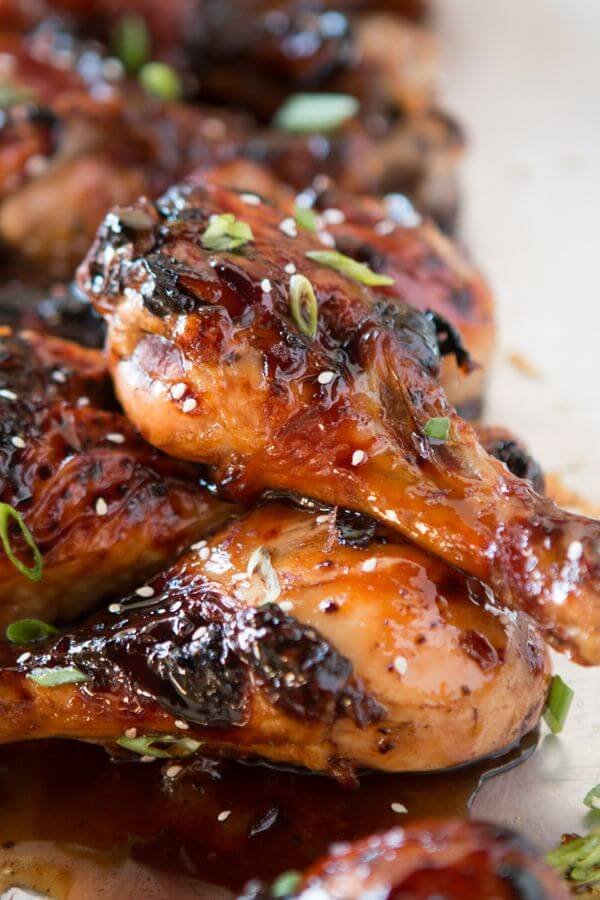
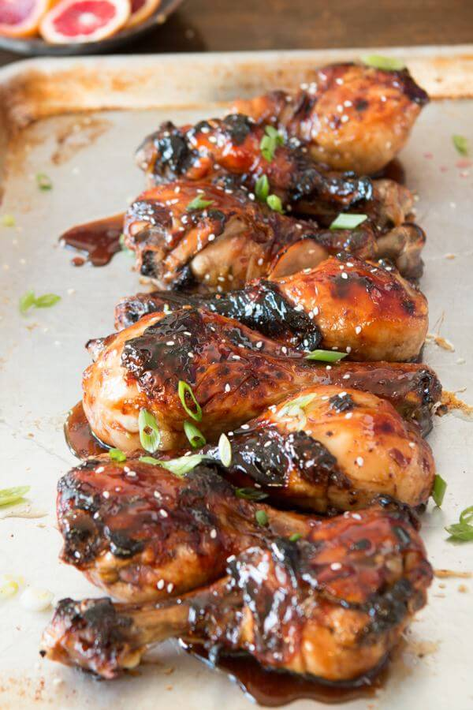
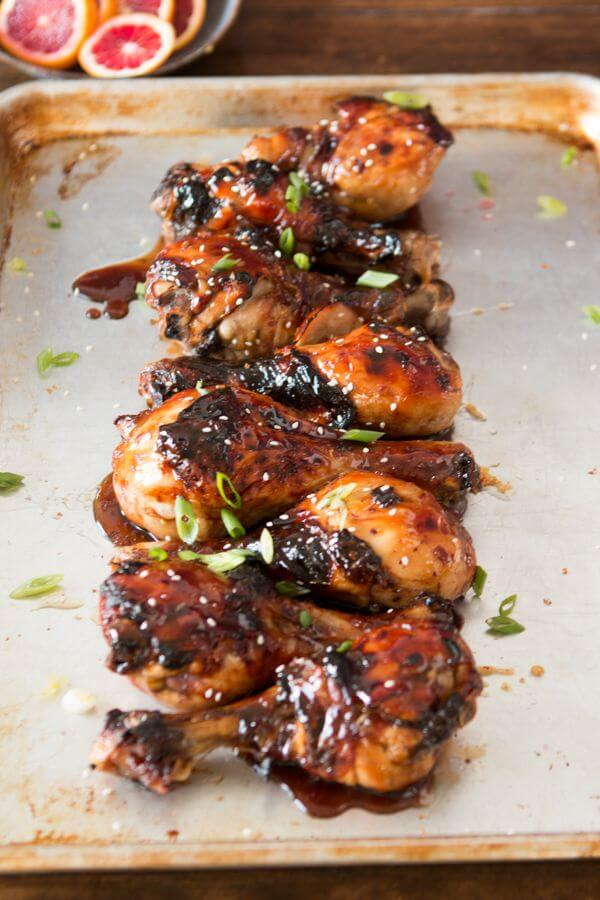
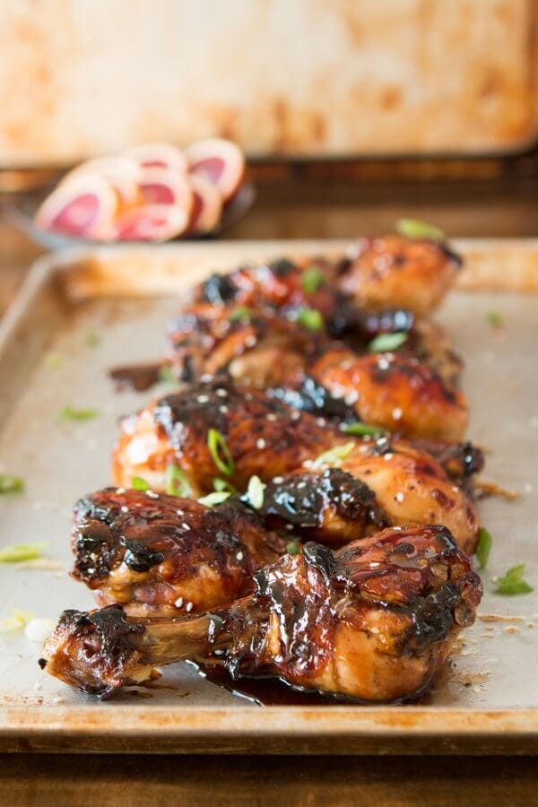

Sticky Orange Chicken
Prep Time:
30 mins
Cook Time:
1 hour
Total Time:
1 hour 30 mins
Yield:
6 servings
Ingredients
8 Chicken Drumsticks
¼ Cup Balsamic Vinegar
½ Teaspoons Ground Ginger
2 Tablespoons Brown Sugar
½ Cup Orange Marmalade
Black Pepper
Salt
Sesame seeds for garnish
Green Onions sliced for garnish
Glaze
1 Cup Orange Marmalade
¼ Cup Balsamic Vinegar
2 Tablespoons Brown Sugar
¼ Teaspoon Ground Mustard
1 Clove Garlic minced
orange Marmalade
5 Oranges or Blood Oranges
1 Lemon
8 Cups of Sugar
8 Cups of Water
Steps
For the Orange Marmalade
Using a paring knife or large zest tool, remove strips of two orange peels and place in a large stock pot.
Repeat for the lemon.
Cut each fruit in half and squeeze out the juices, removing any seeds into a mesh strainer over the pot.
Add the juiced fruit peels into the pot as well.
Add the water and lower the heat to a simmer for 20 minutes.
Remove the large orange halves and lemon halves, leave any strips of the peel in the mixture.
Add the sugar and bring back to a boil until the temperature reaches 220 degrees.
Allow to cool over night before placing in jars.
Marmalade with be thick and stick.
For the marinade
Place the ingredients in a large ziploc and squish the bag to mix well.
Allow to sit in the fridge for 30 minutes to all day.
The longer the better.
To Cook
Preheat oven to 400 degrees.
Line a cookie sheet with foil and place a cooling rack on top.
Place the drumsticks on it, discarding the marinade.
Sprinkle with a little pepper and a pinch of salt.
Bake for 45 minutes, remove from the oven and baste with half the glaze.
Bake an additional 15 minutes and baste again and garnish before serving.
For the Glaze
In a saucepan over medium heat, add the ingredients and bring to a boil then simmer until reduced by 1/3.
Remove from heat.
Notes
Store in refrigerator for up to 5 days.
Gallery
  
MENU